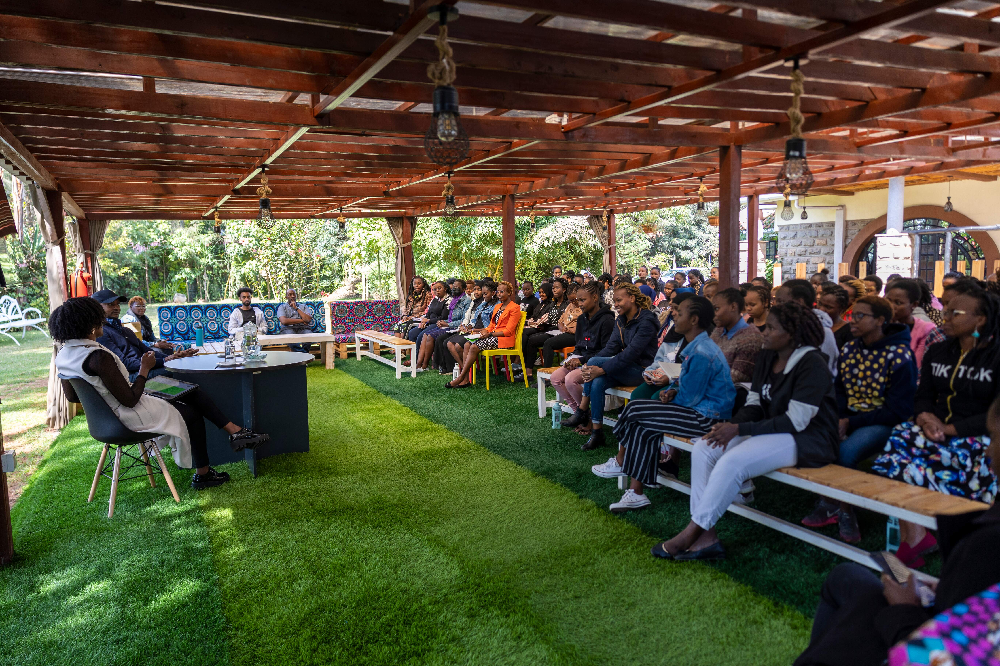
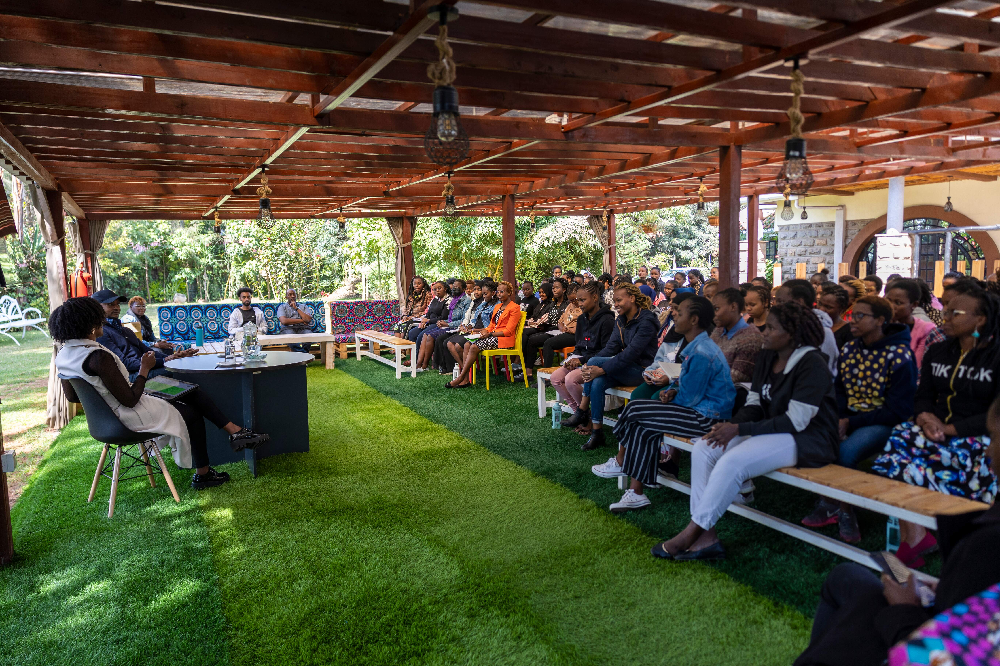
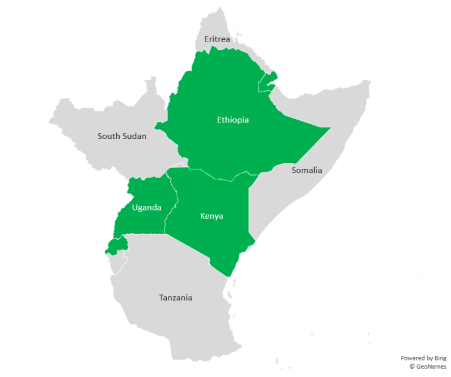
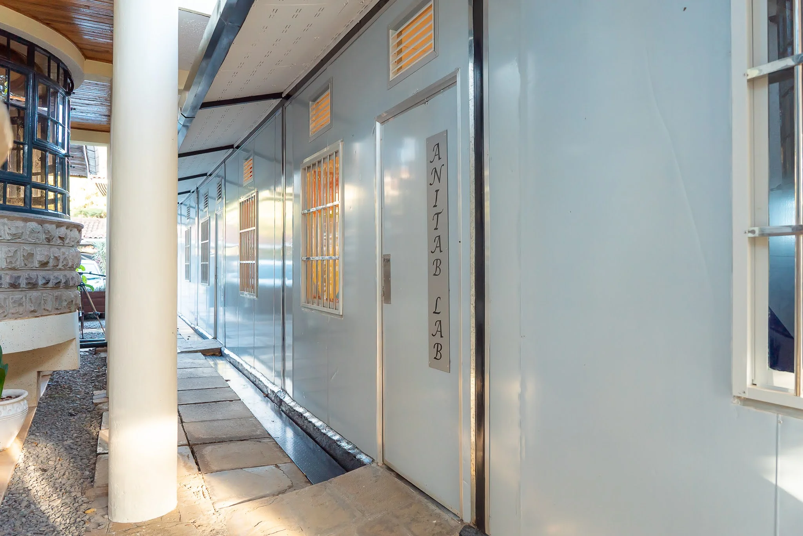
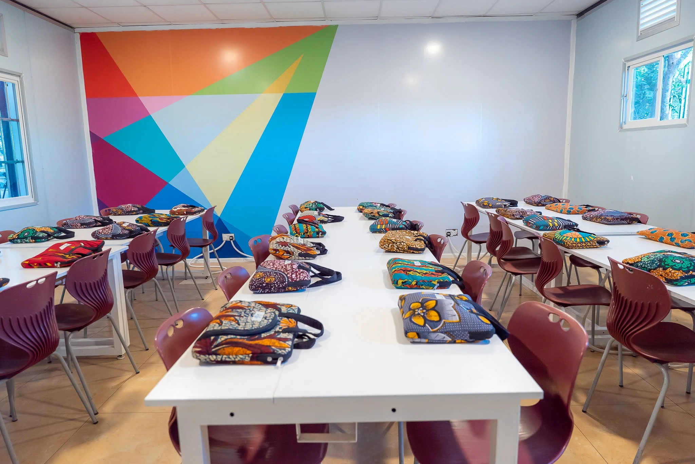

The 2025 codeHive programme began on 1st of February 2025 where yhe students were being admitted and the parents and guardians were signing contracts.The first orientation session also began on the same day in the afternoon.It was mainly introduction of the AkiraChix community which included the staff,administration and the 2025 codeHive cohort students.The students were mainly from Kenya,Uganda,Ethiopia which among them was the highest population,Rwanda,Somali,South Sudan and Malawi.
.jpeg)
After the first session we were allowed to go around the campus to familiarize ourselves with the serene Karen surruondings.During this we were interacting with each other as students while getting to know each other especially since we are from different cultures and exchanging the nitty gritties experiences everyone has had from home.We also had to go back to our rooms so that we can unpack and arrange our belongings as we meet our fellow roommates.
The next day we were assigned our classes and laptops according to our codeHive IDs.Currently it is just two classes Lovelace and AnitaB.On the first class session we were taught how to set-up our professional emails that we would be using.These emails would help us make accounts for the applications we would use as aspiring software engineers.These were GitHub and Slack which would be used for communication and learning how to make softwares.
 During some of the orientation sessions we were being trained on the safeguarding policies and the institution's handbook so as to enable us to know where to go if there are any issues and concerns to raise.We also elected representatives amongst ourselves so that communication between us the students and the administration is made easier.We were also advised to join the coding club that helps students to sharpen their coding skills.Exercises were also recommended during the tea time at 4pm so as to let off some little steam from the hectic day of classes.

.jpeg)
Some of the good experiences I had in th efirst week is that I was able to make a few friends despite my introverted nature.Th efood that was served at the campus was from the various cultures we came from and they were very delicious.I was also able to learn a little about how tech products are made and how they solve problems in the community so as to make life easier as we partake research in some of this tech products.While being in the programme I was struggling to adjust to the timelines especially waking up early in the morning and being in class the whole day but it will bear a fruit from the hardwork and resilience I will continue to put in.
I am looking forward to the end of the programme and hoping to graduate and become a software engineer.I hope to become the better version of myself and bearing fruits from the hardwork I will put in while in the prograame on career pathway of a software engineer.